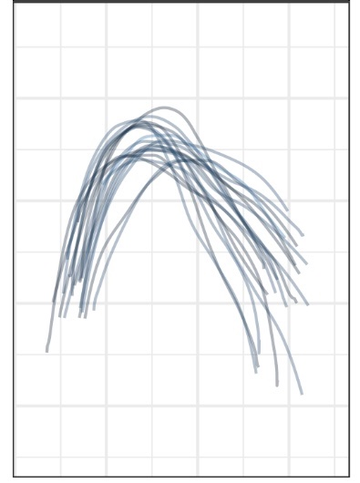
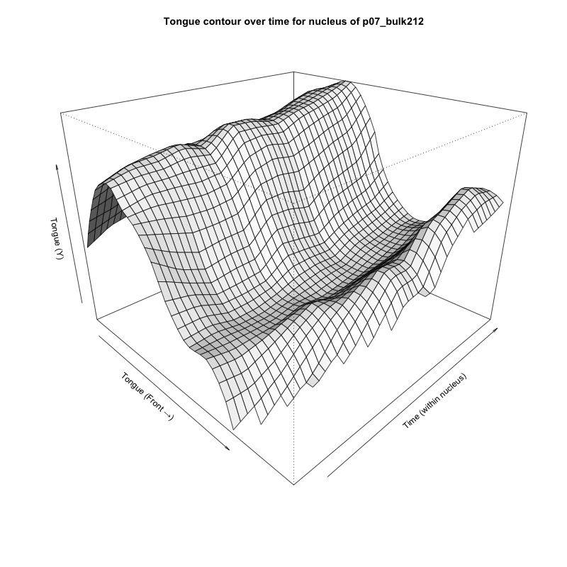
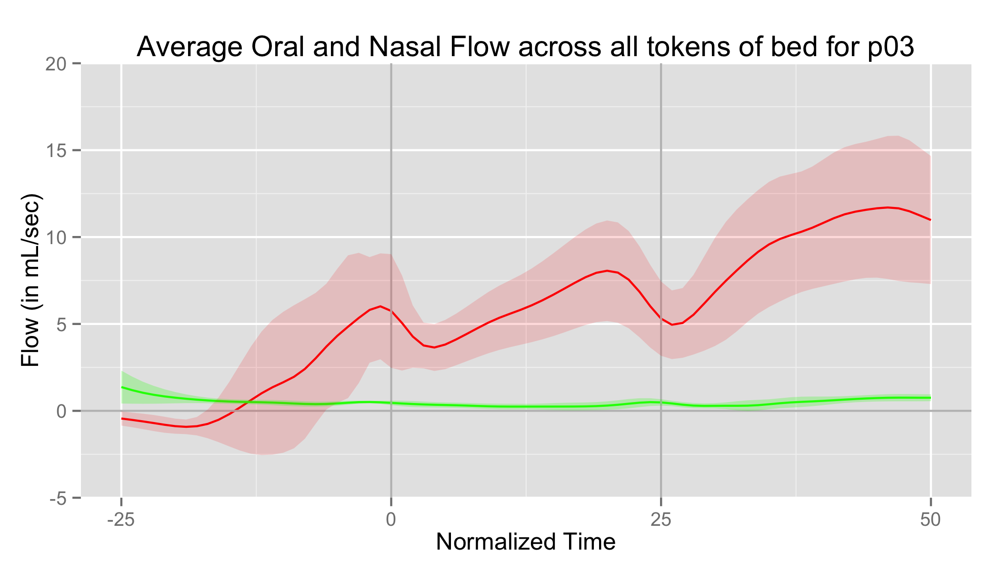
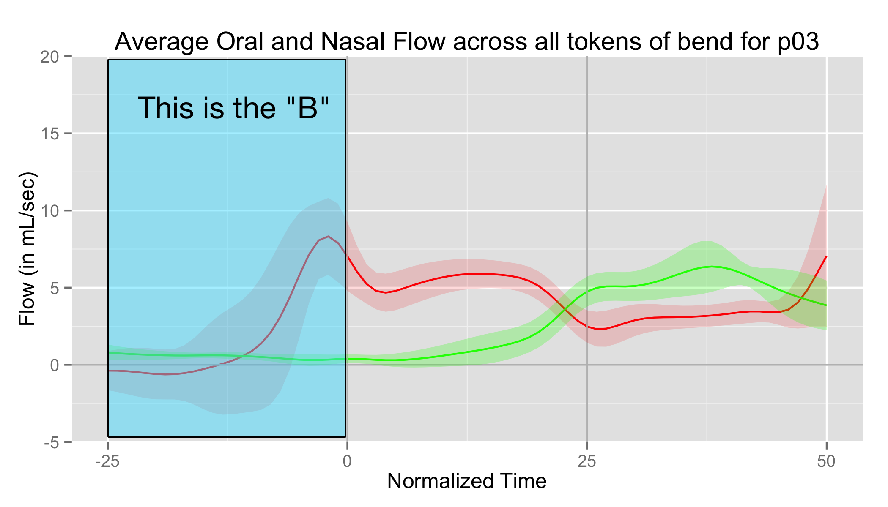
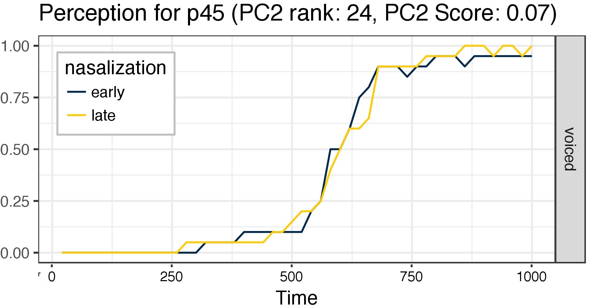
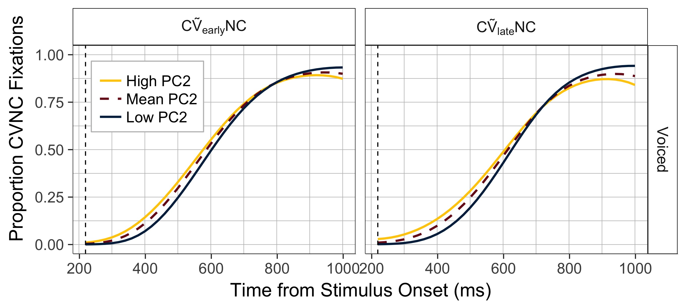

# Linguistic Problems with Statistic Solutions Will Styler <http://savethevowels.org/talks/misc_ucr_stats.html> --- ### Today's Plan - What is Linguistics, and why? - The state of statistics in linguistics - Coarticulation - Complexity from complex data types - Complexity from complex questions - Why is this a problem for our field? - Why should statisticians and linguists team up more often? --- # What is Linguistics, and why? --- ### Linguistics is the study of Language - What is this thing I'm doing right now with my flapping bits of meat around in my head and you then understanding my thoughts? - How can we describe what languages are doing? - How can we understand the differences and similarities among them? - What does language tell us about cognition and culture? --- ### Linguists study languages to understand Language - Many linguists speak lots of languages, but some don't! - We're interested in the whole enterprise, and study it scientifically --- ### We break Linguistics into subfields - "How does talking and understanding speech work?" - Phonetics - "How do units of sound or gesture change when we combine them?" - Phonology - "How do we build words?" - Morphology - "How do we combine words into sentences?" - Syntax - "What does it all mean?" - Semantics and Pragmatics - "How does this less-well-known language work?" - Lg. Documentation - ... and many more! --- ### Linguistics is an increasingly experimental discipline - Some folks still work in armchairs - ... or in the homes and worlds of language experts - Theory is now often supported by recourse to quantitative data - Especially where the patterns are small, variable, or difficult to ferret out --- ### Almost every type of linguistic research has data to analyze - Text data (e.g. large corpora) - Survey data (e.g. responses, free text) - Experimental data (e.g. eye tracking, reaction time, accuracy) - Neural data (e.g. EEG, fMRI, PET, MEG) - Imaging data (e.g. video, ultrasound) - Spatial data (e.g. GIS info, 3D spatial movement tracking) --- ### I'm a phonetician - My focus is on understanding exactly what's happening in the mouth when we talk - As well as on how we're reconstructing those gestures using the acoustic signal we can hear - ... and we're going to focus on some phonetic questions today --- # Statistics in Linguistics --- ## The State of Linguistic Statistics --- ### Most linguists take some basic statistics classes - "Statistics for Psychology Students" - Increasingly more sophisticated classes are available - "Bayesian Methods for Linguists" - "Generalized Additive Models" --- ### There are dedicated resources for statistics for Linguists > [Baayen, R. H. (2008). Analyzing Linguistic Data: A practical introduction to statistics using R. Cambridge University Press.](https://www.cambridge.org/us/academic/subjects/languages-linguistics/grammar-and-syntax/analyzing-linguistic-data-practical-introduction-statistics-using-r) > [Winter, Bodo (2020). Statistics for Linguists: An Introduction Using R. Routledge.](https://www.routledge.com/Statistics-for-Linguists-An-Introduction-Using-R/Winter/p/book/9781138056091) --- ### We're still pretty basic - There are absolutely complex analyses being run in the field - Some specializations (e.g. neurolinguistics) require advanced models to function - Some linguists have secondary passions in statistics - Some statisticians moonlight in linguistics (to varying degrees of success) - The vast majority of linguistic work in these core fields is still supported by more basic methods - T-Tests and Chi-Square, decreasingly, with ANOVA and lm/glm on the rise --- ### The most recent statistical 'trend' in the field is towards Linear Mixed Effects Regression - Most experiments have some decidedly random random factors - Speaker language background differences - Differences in vocal tract sizes - Individual word differences - Usually implemented using ``lmer`` in R - ... but mixed models are right at the edge of many linguists' understanding - This has led to a saying... --- > "Giving Linear Mixed Models to Linguists is like giving shotguns to toddlers" --- ### ... but linguists are needing more and more statistical complexity - Larger and larger text corpora are allowing (and forcing) *massive* analyses - Interdisciplinary work often inherits the toolchains of related methods - New experimental methods require new technology to process it - More nuanced questions require more nuanced examinations --- ### We're going to look at those last two - Complex data requiring complex analysis - Nuanced questions requiring nuanced analysis - We're going to examine both in the context of linguistic phonetics --- # Coarticulation in Phonetics --- ### Phonetics is the study of speech and speech perception - "How are you moving structures inside your body to produce this word?" - "How are listeners able to understand that you've produced this word" --- ### Studying gestures - Speech can be defined as a sequence of gestures of the tongue, lips, larynx and other speech articulators - Gestures of the tongue and mouth are the smallest units of spoken language - Gestures are likely the object of human speech perception - *Both of the claims above could cause a fistfight at a conference, but I said them* --- ### Gestures aren't cleanly separable - We write letters one after the other - ... but the lines between gestures tend to blur - Speech sounds are **not** beads on a string - We often begin moving our articulators towards the next gesture before we've finished the current one - ... and the last sound can often have an influence on the current one - A nice example: 'car key' --- ### This gestural overlap is called 'coarticulation' - "Car key" is changing the articulation of one sound to better 'match' the next - We will often start to articulate the /l/ in words like 'bulk' before we've finished the vowel - Air starts flowing out the nose in words like 'bend' before we actually make the /n/ sound where it's supposed to - This provides useful data for perception! - **Coarticulation is easier when talking, and useful for understanding speech** - So we want to learn more about the gestures we're making --- ### Phonetics has a big problem - We want to see exactly which gestures are happening inside your head - Your head is opaque --- ### Phonetics has done this acoustically for a long time - First by ear training, then frequency-domain analysis ('spectrographs'), now digital signal processing of audio - We've focused on finding quantifiable measures which covary with the articulatory properties under study - "This measure represents the height of the tongue in the mouth" - Articulatory measures are useful - "What exactly are the speech articulators doing inside the head?" - Imaging of tongue motion and position is ideal! --- ### ... but when we look inside the head, we find... --- # Complexity from Complex Data --- ### Ultrasound Imaging - Pulse high-frequency sound waves into the body - Measure the patterns in which they return to image internal structure - The resulting data are black and white image frames showing areas of high and low reflection --- ### Ultrasound Data Acquisition <img class="r-stretch" src="phonmedia/tools_ultrasound.jpg"> --- ### Sample Speech Ultrasound file <video class="r-stretch" controls src="video/ultrasound_northwind.mp4"></video> --- ### Ultrasound in Speech - Captures the motions of the tongue in (generally) two dimensions - Ideal for tracking the *contour* of the tongue --- ### Ultrasound 'Splining' - The machine outputs a series of images (or grayscale matrices) at a fixed sampling rate - We transform images into lists of ordered points representing the tongue shape and location - This is done using undergrads or [machine learning models](https://arxiv.org/abs/1907.10210) --- <section> <img class="r-stretch" src="phonmedia/ultrasound_raw.jpg"> </section> --- <section> <img class="r-stretch" src="phonmedia/ultrasound_splined.jpg"> </section> --- ### Technical Notes - There are some approaches which use PCA on whole-frame images to isolate meaningful components and skip this process (c.f. [Faytak et al. 2020](https://www.journal-labphon.org/article/id/6281/)) - There are many problems with normalizing position and orientation between speakers and words which are Fun --- ### This splined data gives us details about articulation - What is the average/min/max height of the tongue? - "Is the vowel in 'beet' generally higher than the vowel in 'bit'?" - What's the front-back distribution of the tongue? - "Is the vowel in 'boot' really as far back as in 'boat' for Californians?" - How do tongue contours differ between sounds? - "Do we shape the tongue differently for 'buck' and 'bulk'?" - How do tongue contours change during sounds? - "At what point does the tongue start moving towards the /l/ gesture in 'bulk'?" --- ### Getting front-back-high-low distribution is relatively easy <img class="r-stretch" src="phonmedia/ultrasound_splined.jpg"> --- ### Does the tongue shape differ for 'buck' vs. 'bulk'?  <img class="r-stretch" src="phonmedia/ultrasound_lateral.jpg"> --- ### Comparing Contours is difficult (for us) - Usually done using Smoothing Spline ANOVA in Linguistics - Occasionally mixed models with B-Splines - Some work with Generalized Additive Models (GAM) <img class="r-stretch" src="phonmedia/ultrasound_lateral.jpg"> --- ### At what point does the tongue start moving towards the /l/ gesture in 'bulk'? - This is a place where speakers vary - We can look at the time course of the vowel+l portion of the word --- ### Some people show some change later on <img class="r-stretch" src="phonmedia/ultrasound_bulk_somechange.jpg"> --- ### Some people have have massive change early on  --- ### Some people don't show change at all <img class="r-stretch" src="phonmedia/ultrasound_bulk_nochange.jpg"> --- ### Measuring these changes is very difficult (for us) - Quantifying the degree of change in a 50 point spline which changes contour and position over time - Variably, across speakers - Identifying the *onset* of the contour change in time - Identifying specific types of contour change which are most relevant - Finding 'targeted' vs 'untargeted' change - **There isn't a well-established statistical method for doing this in our field!** --- ### "Wait... hold on..." - "People differ in the amount and timing of change...?" --- <section> <img class="r-stretch" src="phonmedia/ultrasound_bulk_nochange.jpg"> </section> --- <section> </section> --- ### "Why do people differ in their patterns of coarticulation?" --- # Complexity from Complex Questions --- ### Background: Nasal Coarticulation - /n/ is a 'nasal' sound, with airflow from the nose - This is accomplished by lowering the 'velum' <img class="r-stretch" src="phonmedia/sag_alveolar.jpg"><img class="r-stretch" src="phonmedia/sag_nasal.jpg"> --- <huge>bend</huge><br> <huge>/bɛnd/</huge> * **...but there's more to it than the symbols show us!** * In the word "bend", we start nasal airflow before the nasal /n/, *during the vowel* --- ### This is audible and useful to us - Is this 'bob' or 'bomb'? <audio controls> <source src="phonmedia/bomb_CJ1_8_noised-2198.wav" type="audio/wav"> </audio> - **We use coarticulation to tell what the upcoming word will be more quickly!** --- ### We can measure nasal coarticulation by measuring airflow from the mouth and nose - This is called 'pneumotachography' <img class="r-stretch" src="phonmedia/tools_airflowcu.jpg"> --- ### Airflow measurement gives us curves - Oral and nasal flow in mL/sec - Sampled (here) at 50 points through the vowel --- ### The word 'bed' has no nasal airflow  --- ### The word 'bend' is more complicated <img class="r-stretch" src="phonmedia/airflow_bend.png"> --- ### The /b/ has no nasal flow  --- ### The /n/ has lots of nasal flow and little oral flow <img class="r-stretch" src="phonmedia/airflow_bend_annot_n.png"> --- ### The vowel in the middle shows coarticulation <img class="r-stretch" src="phonmedia/airflow_bend_annot_coart.png"> --- ### Looking at airflow we can see coarticulation directly - Both the *amount* of flow and the *timing* of the flow --- ### Some speakers show only a bit of coarticulation <img class="r-stretch" src="phonmedia/airflow_nasal_lowcoart.jpg"> --- ### Some speakers show only a bit of coarticulation <img class="r-stretch" src="phonmedia/airflow_nasal_lowcoart2.jpg"> --- ### Some speakers show moderate coarticulation <img class="r-stretch" src="phonmedia/airflow_nasal_midcoart.jpg"> --- ### Some speakers show massive coarticulation <img class="r-stretch" src="phonmedia/airflow_nasal_highcoart.jpg"> --- ### Some speakers show massive coarticulation <img class="r-stretch" src="phonmedia/airflow_nasal_highcoart2.jpg"> --- ### Speakers differ greatly in their *production* of coarticulation - Ranging from 'practically none' to 'it's all nasal' - Inference can be done using splined mixed models, GAMs, and more - Functional data analysis isn't common in Linguistics, but it does happen! --- ### If speakers vary in their production of coarticulation - Do they differ in their *perception* of coarticulation as well? --- ### Measuring the Perception of Coarticulation - Often done using eyetracking - "When does the participant look at the correct image on the screen?" - "Does this person use vowel nasality to choose 'send' over 'said' more quickly?" --- ### Visual World Eyetracking <video class="r-stretch" controls src="video/eyetracking_english.mp4"></video> --- ### Eye Tracking Data - For each trial, 1000 binary points over the course of a second, 'Are they looking at the nasal word?' - 0000000000000001111111111... - Occasionally 00000000000000011111111110000000... - Many, many trials are averaged out to create response curves - "Generally speaking, does this person make a choice earlier in this condition than that one?" --- ### Conditions - "Early Nasalization": Coarticulation begins very early in the vowel - "Late Nasalization": Coarticulation begins later in the vowel - *How early is information about the word made available to listeners?* --- ### Listeners can be compared on the basis of their use of nasality - People who use coarticulation strongly in perception will decide earlier for 'early' nasalization tokens - People who don't use coarticulation in perception will show little distinction between the conditions --- ### Listeners who use coarticulation <img class="r-stretch" src="phonmedia/eyetracking_largeuse1.jpg"> --- ### Listeners who use coarticulation <img class="r-stretch" src="phonmedia/eyetracking_largeuse2.jpg"> --- ### Listeners who largely ignore coarticulation <img class="r-stretch" src="phonmedia/eyetracking_littleuse1.jpg"> --- ### Listeners who largely ignore coarticulation  --- ### So, now we can measure perception of coarticulation - ... and production - This allowed us to ask one very large question... --- ### Is a listener's production of coarticulation related to their perception of coarticulation? - Put differently, do people who coarticulate early, listen for it early? - *Do people who talk unusually expect others to talk the same way?* - This was tested in [Beddor et al. 2018](https://muse.jhu.edu/article/712563) --- ### This is a surprisingly useful question - It gets at the heart of the gesture vs acoustics debate in speech perception - It tells us about the role of our own productions in guiding our learning of a language - It has massive implications for how languages change over time --- ### But it's really, really unpleasant to test - Correlating a functional airflow curve (with massive variation in values) with the overall trend across a large set of logistic time series from eye tracking trials - Some truly random factors we want to get rid of (e.g. variation in frequency and 'lookability' across words) - Some speaker factors we want to get rid of (e.g. variation in pre-look processing time, absolute differences in airflow volume), but some we want to study (e.g. variation in time-to-look by condition, variation in flow slope and time onset) - We're interested in speaker variation, but the experiment was so complex that we could only collect 42 participants - **Yikes** --- ### We needed help - Help came in the form of [Kerby Shedden](https://sph.umich.edu/faculty-profiles/shedden-kerby.html), University of Michigan Department of Statistics --- ### We ended up collapsing the airflow data using PCA - This gave us a single quantity representing timing and degree of coarticulation which we could insert into a model of perception - The perception model was run using ``mcmcglmm`` in R, with B-Splines to model temporal variation --- ### Turns out that people who produce early coarticulation generally listen for early coarticulation  (Adapted from Beddor et al 2018) --- ### Work is ongoing to continue investigating these issues - The production/perception link is very interesting, and uniformly hard to analyze - ... and there are a million other domains to test it in --- ### These cases illustrate the sorts of complexity which we've found ourselves wandering into - ... and analogous issues exist in *every* subfield of linguistics --- # Why is this a problem for our field? --- ### Increasingly complex data has pulled us into complex territories - We've moved from single variable correlations into functional data - ... and in many cases, functional data which is itself captured as a time series - New methods are arriving, but our questions are generally different enough that existing statistical toolchains don't cleanly apply - Our data keep getting richer and bigger - The burden of 'proof' is rising as available data to test is rising --- ### Increasingly complex questions require increasingly nuanced analyses - We're now increasingly studying the kinds of variability which conventional models attempt to factor out - Potentially explanatory data is seldom low-dimensional - SOMETHING --- ### Our statistical needs have surpassed our statistical abilities - Grad level Psych Stats has very little to say about comparing 3D meshes of tongue motion by conditions - This poses a massive teaching problem! - Reviewers are generally chosen for knowledge of specific domains (e.g. coarticulation or French nasality), and have vastly variable statistical backgrounds - "Why not just use an ANOVA here?" - Keeping up with the statistical state-of-the-art is a full-time job, and it's very easy to miss things - ... so those of us who try to learn more about complex analyses often remain toddlers with shotguns --- ### That's why I'm here today - (That and Shuheng's gracious invitation) --- # Linguists and Statisticians have massive collaborative potential --- ### Language is uniquely rewarding as an area of research - You are quite literally always using language - Problems are often interpretable in terms of linguistic experience - It offers a diversity of data types, often in the same experiments - Text data, behavioral experiments, sensor output, imaging data, GIS, and more - Linguistic knowledge is helpful for breaking into Natural Language Processing, and other language-focused data science - Everything I've talked about today has straightforward applications in speech recognition and text-to-speech --- ### Linguists are often held back by lack of knowledge of techniques - It's very possible that 'straightforward' techniques in statistics could be revolutionary in our field - Many of us feel limited by our tools more than our questions - Collaborations can be mutually rewarding, and *extremely* beneficial in our world - Cross-specialization is important --- ### Our field is just realizing this need - There is increasing discussion of hiring statisticians in departments and divisions for consulting and collaboration - ... and already, statistical saavy is a common desired trait for new hires - Statisticians who know even basic elements of language will be increasingly valued --- ### Teamwork can make the dream work - Linguistic work is often held back by relatively basic inference approaches - Increased complexity of data, and increased complexity of questions, both leave ample room for collaboration - New methods in statistics likely have testable uses in language - New questions in linguistics may require new methods in statistics - And people collaborating in this world have a very real chance to make a difference in our fields --- ### Let's talk! - Next time you're looking to branch out, remember that we linguists are here - That we've got amazing data - ... and at the very least, you can use your knowledge to help disarm a toddler --- <huge>Thank you!</huge> Questions? <wstyler@ucsd.edu> <!-- Linguistic Problems with Statistic Solutions In this talk, my goal is to briefly introduce a statistical audience to some of the particularly interesting types of data, hypotheses, and open questions found in Phonetics, the subfield of Linguistics dedicated to the study of speech and speech perception. We'll discuss the state of the field, and then look at two case studies, the analysis of ultrasound data of tongues, and the production-perception loop in speech and perception. In doing so, we'll discuss some of the myriad difficulties left for linguists, and highlight areas which may prove fertile ground for collaborative statistical research. -->